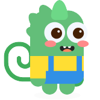
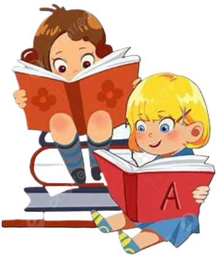

Speak Easy
Learning Resources (Sample!)
English Books
Amazon E-Library
Interactive Activities (Sample!)
Translator
Reading
Roleplay
Community Forums
Progress Tracker
Interactive Reading Book
Select a voice:
Default
Male Voice
Female Voice

Select a book:
Select a book
The Very Hungry Caterpillar
Where the Wild Things Are
Toggle Reading
Pause Reading
Resume Reading
🔁 Repeat Book